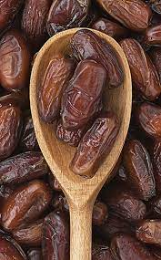

Datiles
Caracteristicas
El dátil es el fruto obtenido de las especies de palmeras Phoenix, principalmente de la especie Phoenix dactylifera, llamada popularmente palmera datilera. Es considerado un alimento básico en los países del Magreb. Su nombre se deriva de la palabra griega δακτύλος («daktilos»), que significa «dedo».
Beneficios
Los dátiles proporcionan una amplia gama de nutrientes esenciales, y son una muy buena fuente en la dieta de potasio. El azúcar contenido en dátiles maduros es alrededor del 80%; el resto se compone de proteínas, fibra y oligoelementos incluyendo el boro, cobalto, cobre, flúor, magnesio, manganeso, selenio y zinc.